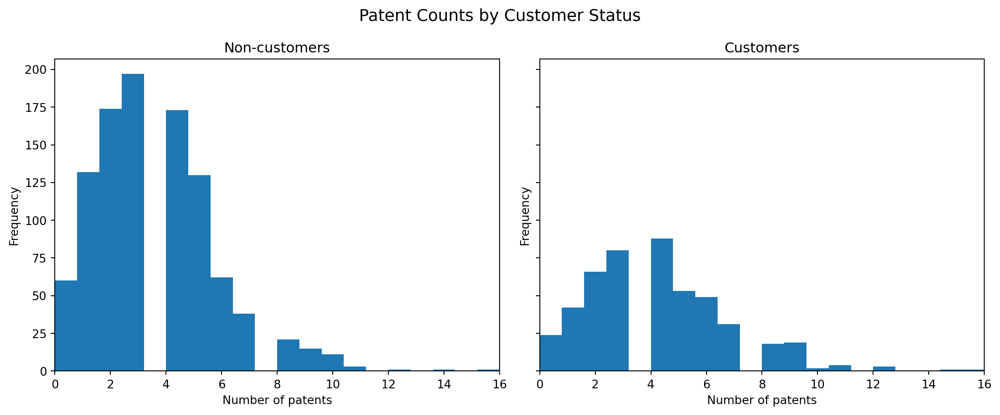
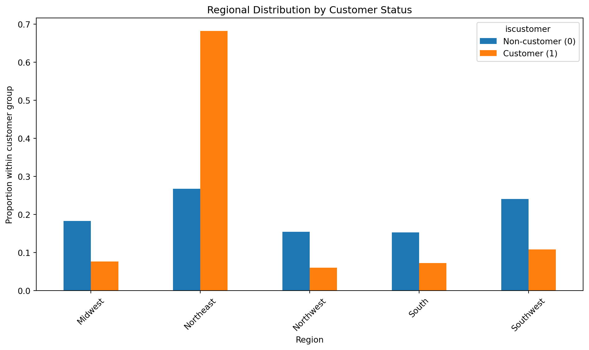
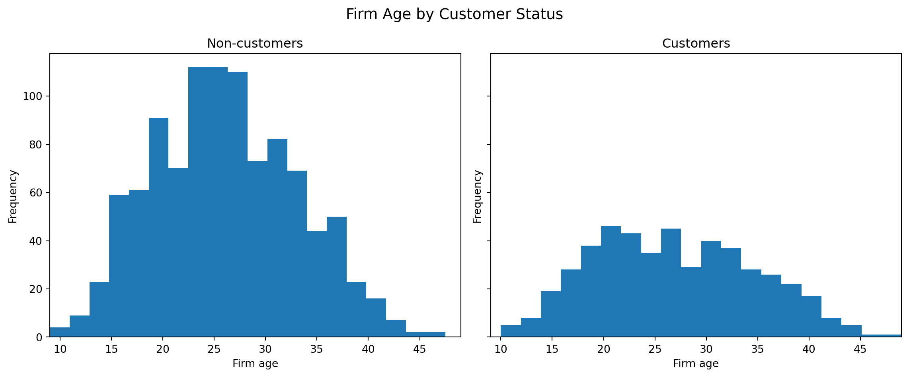
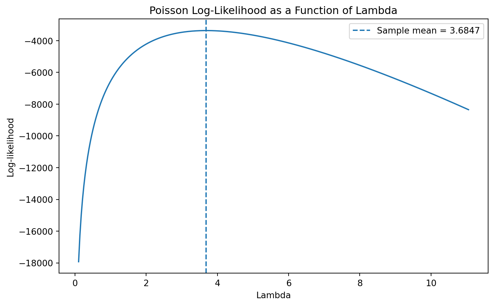
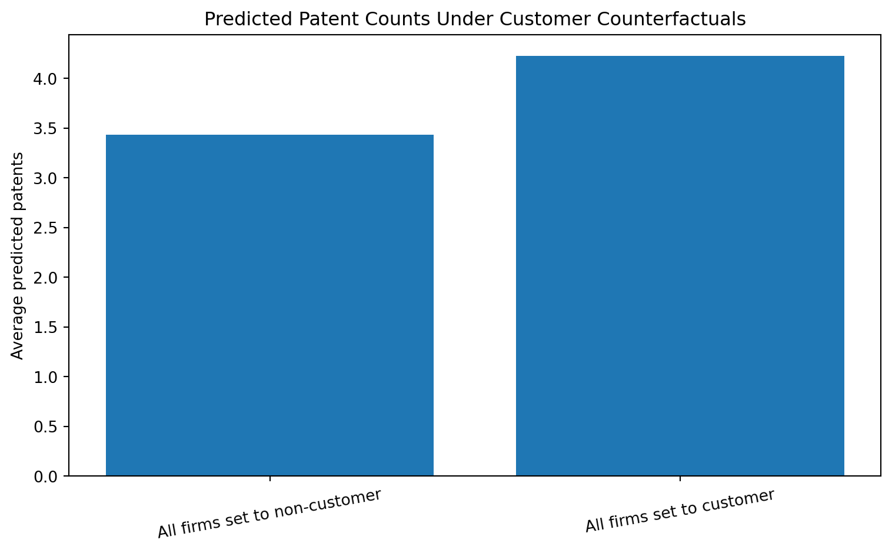

Poisson Regression and Maximum Likelihood Estimation
A Case Study of Blueprinty’s Software and Patent Awards
Author
Yirui Xu
Published
May 18, 2026
Introduction
Blueprinty is a small firm that develops software for preparing blueprints used in patent applications submitted to the U.S. patent office. The firm’s marketing team would like to argue that firms using Blueprinty’s software are more successful in getting patents awarded. At first glance, that seems plausible: if the software helps firms prepare stronger applications, then users of the software might end up with more approved patents.
The difficulty is that the ideal dataset for studying this question does not exist. In a perfect setting, we would observe each firm’s patenting success before and after adopting Blueprinty’s software. That would allow a much cleaner comparison within the same firm over time. Instead, Blueprinty has collected cross-sectional data on 1,500 mature engineering firms. For each firm, the data include the number of patents awarded over the last five years, the firm’s region, its age since incorporation, and whether it uses Blueprinty’s software.
This makes the analysis non-trivial. Blueprinty’s customers are not chosen at random, so any raw difference in patent counts between customers and non-customers could reflect other characteristics of the firms rather than the software itself. For example, customer firms may be older, more established, or concentrated in regions where patenting tends to be more common. The goal of this post is therefore to move beyond raw comparisons and estimate a Poisson regression model that adjusts for observable differences across firms.
Exploring the Data
I begin by reading in the dataset and checking its basic structure.
import numpy as npimport pandas as pdimport matplotlib.pyplot as pltfrom scipy.optimize import minimizefrom scipy.special import gammalnimport statsmodels.api as smdf = pd.read_csv("../blueprinty.csv")print("Shape:", df.shape)print("\nColumns:", df.columns.tolist())print("\nMissing values:")print(df.isnull().sum())df.head()
Shape: (1500, 4)
Columns: ['patents', 'region', 'age', 'iscustomer']
Missing values:
patents 0
region 0
age 0
iscustomer 0
dtype: int64
patents
region
age
iscustomer
0
0
Midwest
32.5
0
1
3
Southwest
37.5
0
2
4
Northwest
27.0
1
3
3
Northeast
24.5
0
4
3
Southwest
37.0
0
The dataset contains 1,500 observations and four variables: patents, region, age, and iscustomer. There are no missing values, so I can move directly to the exploratory analysis.
The first comparison is the distribution of patent counts for customers and non-customers.
customer_df = df[df["iscustomer"] ==1]noncustomer_df = df[df["iscustomer"] ==0]mean_noncustomer = noncustomer_df["patents"].mean()mean_customer = customer_df["patents"].mean()x_min = df["patents"].min()x_max = df["patents"].max()fig, axes = plt.subplots(1, 2, figsize=(12, 5), sharex=True, sharey=True)axes[0].hist(noncustomer_df["patents"], bins=20)axes[0].set_title("Non-customers")axes[0].set_xlabel("Number of patents")axes[0].set_ylabel("Frequency")axes[0].set_xlim(x_min, x_max)axes[1].hist(customer_df["patents"], bins=20)axes[1].set_title("Customers")axes[1].set_xlabel("Number of patents")axes[1].set_ylabel("Frequency")axes[1].set_xlim(x_min, x_max)plt.suptitle("Patent Counts by Customer Status", fontsize=14)plt.tight_layout()plt.show()print("Mean patents for non-customers:", mean_noncustomer)print("Mean patents for customers:", mean_customer)

Mean patents for non-customers: 3.4730127576054954
Mean patents for customers: 4.133056133056133
At the raw level, customer firms appear to perform better. The average number of patents is about 3.47 for non-customers and about 4.13 for customers. The histograms show the same pattern visually: the customer distribution is somewhat shifted to the right. If I stopped here, I might conclude that Blueprinty’s software is associated with better patent outcomes. But that conclusion would be premature, because the two groups may differ systematically in ways that also affect patent counts.
To investigate that issue, I next compare the regional composition of customers and non-customers.
region_counts = pd.crosstab(df["region"], df["iscustomer"])region_props = pd.crosstab(df["region"], df["iscustomer"], normalize="columns")print("Region counts by customer status:")display(region_counts)print("Region proportions by customer status:")display(region_props)region_props.plot(kind="bar", figsize=(10, 6))plt.title("Regional Distribution by Customer Status")plt.xlabel("Region")plt.ylabel("Proportion within customer group")plt.legend(["Non-customer (0)", "Customer (1)"], title="iscustomer")plt.xticks(rotation=45)plt.tight_layout()plt.show()
Region counts by customer status:
iscustomer
0
1
region
Midwest
187
37
Northeast
273
328
Northwest
158
29
South
156
35
Southwest
245
52
Region proportions by customer status:
iscustomer
0
1
region
Midwest
0.183513
0.076923
Northeast
0.267910
0.681913
Northwest
0.155054
0.060291
South
0.153091
0.072765
Southwest
0.240432
0.108108

The regional distributions differ substantially. Customer firms are heavily concentrated in the Northeast, while non-customers are spread much more evenly across the five regions. This matters because regional differences in industry composition, innovation ecosystems, or access to legal and technical resources could affect patent outcomes independently of Blueprinty’s software. If customer firms are concentrated in a region where patenting is already more common, then part of their apparent advantage could simply reflect geography.
I also compare the age distribution of customer and non-customer firms.
mean_age_noncustomer = noncustomer_df["age"].mean()mean_age_customer = customer_df["age"].mean()age_min = df["age"].min()age_max = df["age"].max()fig, axes = plt.subplots(1, 2, figsize=(12, 5), sharex=True, sharey=True)axes[0].hist(noncustomer_df["age"], bins=20)axes[0].set_title("Non-customers")axes[0].set_xlabel("Firm age")axes[0].set_ylabel("Frequency")axes[0].set_xlim(age_min, age_max)axes[1].hist(customer_df["age"], bins=20)axes[1].set_title("Customers")axes[1].set_xlabel("Firm age")axes[1].set_ylabel("Frequency")axes[1].set_xlim(age_min, age_max)plt.suptitle("Firm Age by Customer Status", fontsize=14)plt.tight_layout()plt.show()print("Mean age for non-customers:", mean_age_noncustomer)print("Mean age for customers:", mean_age_customer)

Mean age for non-customers: 26.101570166830225
Mean age for customers: 26.9002079002079
The age difference is smaller than the regional difference, but it is still present. Customer firms are slightly older on average: about 26.90 years versus about 26.10 years for non-customers. Older firms may have more experience, stronger R&D pipelines, or more established legal processes around patenting. That makes age another variable that should be controlled for in the regression analysis. Overall, the exploratory analysis shows that customer and non-customer firms differ in observable ways, which is exactly why a regression framework is useful.
A Simple Poisson Model via Maximum Likelihood
The outcome variable in this dataset is a count: the number of patents awarded to each firm over the last five years. Counts are non-negative integers, so a Normal model is not a natural fit. The Poisson distribution is a much more sensible starting point because it is specifically designed for count data and guarantees non-negative predictions.
Suppose first that every firm shares the same patent rate \(begin:math:text\)\lambda\(end:math:text\), so that
\[
Y_i \sim \text{Poisson}(\lambda).
\]
For a single observation, the Poisson probability mass function is
The last term does not depend on \(begin:math:text\)\lambda\(end:math:text\), so maximizing the log-likelihood means finding the value of \(begin:math:text\)\lambda\(end:math:text\) that best fits the observed count data.
Next I evaluate the log-likelihood over a grid of possible \(begin:math:text\)\lambda\(end:math:text\) values.
lam_grid = np.linspace(0.1, Y.mean() *3, 300)loglik_values = [poisson_loglikelihood(lam, Y) for lam in lam_grid]plt.figure(figsize=(8, 5))plt.plot(lam_grid, loglik_values)plt.axvline(Y.mean(), linestyle="--", label=f"Sample mean = {Y.mean():.4f}")plt.title("Poisson Log-Likelihood as a Function of Lambda")plt.xlabel("Lambda")plt.ylabel("Log-likelihood")plt.legend()plt.tight_layout()plt.show()print("Sample mean of patents:", Y.mean())

Sample mean of patents: 3.6846666666666668
The curve is concave and reaches its maximum near 3.6847. This is exactly how the MLE can be “read” off the graph: the best-fitting value of \(begin:math:text\)\lambda\(end:math:text\) is the point where the log-likelihood is highest. Values too far to the left or right provide a worse fit and therefore lower the log-likelihood.
If we differentiate the log-likelihood and set the derivative equal to zero, we obtain the familiar Poisson result
\[
\hat{\lambda}_{\text{MLE}} = \bar{Y}.
\]
That feels reasonable because the mean of a Poisson distribution is \(begin:math:text\)\lambda\(end:math:text\). I also verify this numerically.
The numerical MLE is essentially identical to the sample mean. That is exactly what we should expect, because the numerical optimizer and the analytical derivation are both solving the same optimization problem.
Poisson Regression
The constant-\(begin:math:text\)\lambda\(end:math:text\) model is too restrictive for this application because firms differ in age, region, and customer status. A more realistic specification allows each firm to have its own Poisson rate:
This is the standard Poisson regression model. The exponential link is important because \(begin:math:text\)X_i'\beta\(end:math:text\) can be any real number, while \(begin:math:text\)\lambda_i\(end:math:text\) must always be positive. Exponentiating the linear predictor guarantees that fitted patent rates remain on the positive real line.
I construct a design matrix with an intercept, age, age squared, a set of regional indicators, and the customer dummy. In practice I center age before squaring it, which improves numerical stability without changing the substance of the model. I include age squared because the relationship between firm age and patenting is unlikely to be perfectly linear, and I omit one region to avoid perfect collinearity with the intercept.
I code that objective directly and maximize it numerically.
def poisson_regression_loglikelihood(beta, Y, X): eta = X @ beta eta = np.clip(eta, -20, 20) lam = np.exp(eta)return np.sum(Y * eta - lam - gammaln(Y +1))def neg_poisson_regression_loglikelihood(beta, Y, X):return-poisson_regression_loglikelihood(beta, Y, X)
I first fit the model using statsmodels.GLM() and then use those coefficients as stable starting values for my own numerical optimization. This makes the maximization more reliable.
The coefficient estimates from the manually coded MLE and from statsmodels.GLM() match exactly in this application. That is strong evidence that the likelihood function has been specified and optimized correctly. The standard errors are also extremely close. In general, small differences can appear because the Hessian is being handled numerically, but here the agreement is excellent.
For reference, the built-in GLM summary is shown below.
The most important coefficient is the one on iscustomer, which is estimated at about 0.2076. In a Poisson model, coefficients operate on the log scale, so this is not interpreted as “0.2076 more patents.” Instead, I exponentiate the coefficient to obtain the multiplicative effect on the expected patent count.
The result implies that, holding age and region fixed, Blueprinty customers are predicted to have about 23.1% more patents than otherwise similar non-customers. The sign is positive, which is consistent with Blueprinty’s marketing story, and the magnitude is meaningful without being implausibly large.
The other coefficients are also sensible. The negative coefficient on centered age and the negative coefficient on centered age squared suggest a non-linear relationship between firm age and patenting. The regional coefficients are relatively modest, but they are important controls because the exploratory analysis showed that customer firms are unevenly distributed across regions.
The Effect of Blueprinty’s Software
Even though the customer coefficient is statistically interpretable, it is still on the log scale. To obtain a more intuitive answer in terms of predicted patent counts, I construct two counterfactual datasets:
\(begin:math:text\)X_0\(end:math:text\), where every firm is treated as a non-customer.
\(begin:math:text\)X_1\(end:math:text\), where every firm is treated as a customer.
All other observed characteristics, including age and region, are left unchanged. This isolates the model-implied effect of customer status while holding the rest of the covariates fixed.
I then use the fitted Poisson regression to predict expected patent counts under each scenario.
yhat_0 = np.exp(X0 @ glm_results.params)yhat_1 = np.exp(X1 @ glm_results.params)treatment_effect = np.mean(yhat_1 - yhat_0)print("Average predicted patents if all firms were non-customers:", np.mean(yhat_0))print("Average predicted patents if all firms were customers:", np.mean(yhat_1))print("Average effect (customer - non-customer):", treatment_effect)
Average predicted patents if all firms were non-customers: 3.436219005025926
Average predicted patents if all firms were customers: 4.228987076071253
Average effect (customer - non-customer): 0.7927680710453278
To make this easier to read, I also summarize the two counterfactual means in a small table and chart.
summary_df = pd.DataFrame({"scenario": ["All firms set to non-customer", "All firms set to customer"],"mean_predicted_patents": [np.mean(yhat_0), np.mean(yhat_1)]})plt.figure(figsize=(8, 5))plt.bar(summary_df["scenario"], summary_df["mean_predicted_patents"])plt.title("Predicted Patent Counts Under Customer Counterfactuals")plt.ylabel("Average predicted patents")plt.xticks(rotation=10)plt.tight_layout()plt.show()summary_df

scenario
mean_predicted_patents
0
All firms set to non-customer
3.436219
1
All firms set to customer
4.228987
The counterfactual exercise implies that if all firms in the sample were treated as non-customers, the average predicted number of patents would be about 3.436. If all firms were treated as customers, the average predicted count would rise to about 4.229. The difference is about 0.793 patents over five years. This gives a more intuitive estimate of the customer effect: after controlling for age and region, customer status is associated with roughly 0.8 additional patents on average over the five-year period.
Overall, the results provide evidence consistent with Blueprinty’s marketing claim. Customer firms appear to outperform otherwise similar non-customers even after controlling for observable differences in age and region. However, this is still an observational study, not a randomized experiment. I cannot rule out the possibility that customer firms differ from non-customer firms in other unobserved ways, such as R&D intensity, product sophistication, legal resources, or managerial quality. Those omitted factors could also influence patent outcomes. For that reason, the analysis should be interpreted as suggestive evidence rather than definitive causal proof.